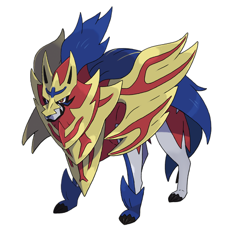
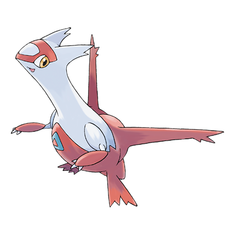
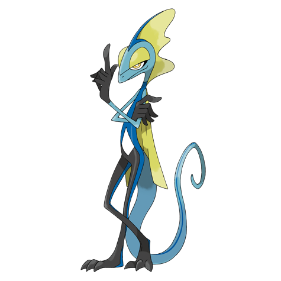
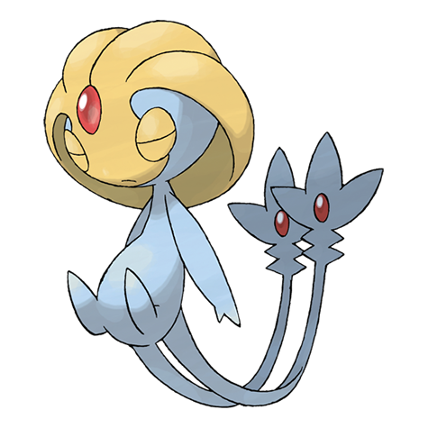
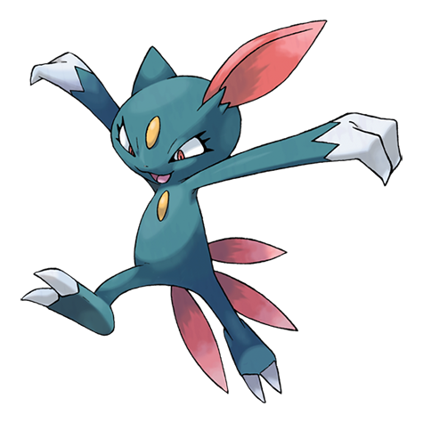
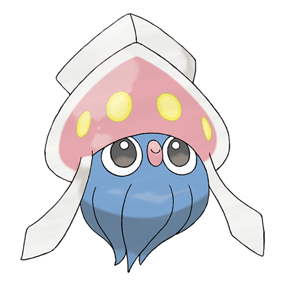

- キョダイマックス キングラー（みず）。マックスバトルの★5以上ボス（キョダイマックス）。
- 弱点：でんき・くさ
- 耐性：ほのお・みず・こおり・はがね
- 弱点はでんき・くさ。でんきの攻撃役がおらず、くさのキョダイマックスフシギバナも育成途中なので、受けを固めて長期戦に備える
スペシャルアタック候補
- このボスがスペシャルアタックとして使う技の候補（みんポケ＋第2源で照合）。この中からランダムで出る。タイプ一致（STAB）の技はダメージが1.2倍で特に警戒。
- 【ノーマル】 はさむ
- 【みず】（タイプ一致・1.2倍） みずのはどう／クラブハンマー／シェルブレード
- 【むし】 シザークロス
- 技は選べない。最初の大技のタイプを見て、そのタイプに強い手持ちに替える（下の実効防御比較表を参照）
与ダメージランキング（弱点別）
※ 下の数字はボスの防御を考えない目安です（専用ページ「ダイマックス技 攻撃ランキング（タイプ別）」の等倍1発×弱点倍率を切り捨て、ダイマックス中に3回撃つ前提の3発合計）。実際のダメージはボスの防御でも変わります。
- 1位 キョダイマックスストリンダー（キョダイカンデン）：約454 ×3発 ＝ 1362
- 2位 サンダー（ダイサンダー）：約396 ×3発 ＝ 1188
- 3位 エレキブル（ダイサンダー）：約390 ×3発 ＝ 1170
- 4位 ライコウ（ダイサンダー）：約379 ×3発 ＝ 1137
- 5位 サンダース（ダイサンダー）：約364 ×3発 ＝ 1092
- 1位 キョダイマックスゴリランダー（キョダイコランダ）：約483 ×3発 ＝ 1449
- 2位 キョダイマックスフシギバナ（キョダイベンタツ）：約404 ×3発 ＝ 1212
- 3位 ゴリランダー（ダイソウゲン）：約376 ×3発 ＝ 1128
- 4位 アマージョ（ダイソウゲン）：約350 ×3発 ＝ 1050
- 5位 リーフィア（ダイソウゲン）：約340 ×3発 ＝ 1020
ボスの強さ（PokéChespin t6-gmax・実験値）
PokéChespin（pokechespin.net）の t6-gmax モデル（★6キョダイマックス）。強さは HP と t6-gmax 係数（単一値）で決まる。この係数は実験値で、みんポケ式の単体／全体／防御の3分値とは違い、低攻撃種族の補正込みの単一係数（攻撃倍率は t6-gmax では×1＝t5ダイマックスの×2とは異なる）。避けられない全体攻撃の実効は 0.85、スワイプで避けられる単体攻撃はその2倍（1.7）。みんポケ(9db)はこのボスのCPMを公表していないため、t5ダイマックスのような外部データでの検算はできない（下の数値は PokéChespin の実験モデルによる目安）。
| 項目 | 値 |
|---|---|
| HP | 100,000 |
| t6-gmax 係数（単一値・実験値） | 0.85 |
| 攻撃倍率 | ×1 |
| 全体攻撃の実効（避けられない） | 0.85×1 ＝ 0.85 |
| 単体攻撃（スワイプで回避可） | 全体の2倍 ＝ 1.7 |
HPは PokéChespin t6-gmax の 100,000。
出典: PokéChespin（pokechespin.net・GitHub CreatorBeastGD/pokechespin）の t6-gmax モデル（みんポケ=9db はCPM未公表）（PokéChespin t6-gmax：lib/PoGoAPI.ts t6gmaxStats（HP）＋ lib/calculations.ts CPM_VALUES（コード→係数）・攻撃倍率は lib getDamageMultiplier('raid-t6-gmax')=1）／CPM・HPともに実験値のため目安
被ダメージ率（全体攻撃1発）
ボスの全体攻撃（避けられない技）1発で、各ポケモンが最大HPの何％を削られるか（実ダメージ÷最大HP）。100%超＝1発で倒れる（赤セル）。PokéChespin t6-gmax モデル（★6キョダイマックス・係数は実験値 0.85×攻撃倍率×1＝実効 0.85）で計算。手持ちのダイマックス／キョダイマックス全個体を、いちばん耐える順（下の注記参照）で並べている。
| 受け役 | はさむ 威35 | みずのはどう 威65 | クラブハンマー 威85 | シェルブレード 威55 | シザークロス 威45 |
|---|---|---|---|---|---|
 ハピナス ハピナスHP399 | 6.8% | 14.8% | 19.5% | 12.5% | 8.8% |
 ザマゼンタ(王)盾+60 HP228 | 4.4% | 14.9% | 19.7% | 12.7% | 3.5% |
 パルキア パルキアHP119 | 24.4% | 21.0% | 26.9% | 17.6% | 31.1% |
| ハピナス(2体目) HP305 | 11.5% | 25.6% | 33.4% | 21.6% | 14.8% |
 ザシアン ザシアンHP158 | 8.2% | 27.8% | 36.7% | 23.4% | 6.3% |
 フシギバナ フシギバナHP138 | 20.3% | 28.3% | 37.0% | 23.9% | 26.1% |
 シャワーズ シャワーズHP169 | 21.9% | 30.2% | 39.6% | 26.0% | 27.8% |
 メタグロス メタグロスHP154 | 9.1% | 30.5% | 39.6% | 26.0% | 17.5% |
 ディアルガ ディアルガHP130 | 13.8% | 30.8% | 40.0% | 26.2% | 17.7% |
 トドゼルガ トドゼルガHP152 | 22.4% | 31.6% | 40.8% | 26.3% | 28.9% |
 レジドラゴ レジドラゴHP246 | 23.2% | 32.1% | 41.9% | 27.2% | 29.7% |
 ラティアスHP121 | 20.7% | 28.9% | 37.2% | 24.8% | 42.1% |
 ムゲンダイナ ムゲンダイナHP145 | 24.8% | 35.2% | 45.5% | 29.7% | 20.0% |
 カイリキー カイリキーHP174 | 16.1% | 35.6% | 46.6% | 30.5% | 13.2% |
 インテレオンHP130 | 26.9% | 37.7% | 49.2% | 31.5% | 34.6% |
 ラティオス ラティオスHP119 | 24.4% | 33.6% | 43.7% | 28.6% | 49.6% |
 ユクシーHP115 | 20.0% | 44.3% | 57.4% | 37.4% | 40.9% |
 サーナイト サーナイトHP117 | 24.8% | 54.7% | 70.9% | 46.2% | 31.6% |
 ゲンガー ゲンガーHP126 | 10.3% | 55.6% | 73.0% | 47.6% | 12.7% |
| カイリキー(2体目) HP129 | 29.5% | 64.3% | 83.7% | 54.3% | 23.3% |
 エースバーン エースバーンHP149 | 20.1% | 71.1% | 92.6% | 59.7% | 16.1% |
 ドサイドン ドサイドンHP188 | 9.0% | 79.3% | 103.2% 1発で倒れる | 67.0% | 18.1% |
 ニューラHP93 | 44.1% | 97.8% | 128.0% 1発で倒れる | 82.8% | 90.3% |
 ドリュウズ ドリュウズHP150 | 18.7% | 105.3% 1発で倒れる | 137.3% 1発で倒れる | 89.3% | 24.0% |
 マーイーカHP79 | 86.1% | 192.4% 1発で倒れる | 251.9% 1発で倒れる | 163.3% 1発で倒れる | 283.5% 1発で倒れる |
手持ちの実CP・実個体値で計算。ボスの強さは PokéChespin t6-gmax モデル（pokechespin.net）の実験値（単一係数＝低攻撃種族の補正込み／みんポケはCPM未公表で t5 のような外部検算なし）。全体攻撃＝係数 0.85×攻撃倍率1の実効 0.85（t6-gmax の攻撃倍率は×1＝t5の×2と異なる）、単体攻撃（スペシャル技・スワイプで回避可）はその2倍、天候ブースト時は1.2倍。王の姿ザマゼンタは開始時の盾ぶん最大HP+60で計算。威＝技の威力。並びは、そのボスの全体攻撃のうちいちばん被ダメージ率が高い技（最悪ケース）が小さい順（＝いちばん耐える手持ちが上）。出典: PokéChespin t6-gmax（式は GO標準のダメージ式 0.5×威力×攻÷防×倍率＋1・あくまで実験モデルの目安）／画像: PokéAPI
出陣する3体（戦い方のコツ）
出陣する3体：フシギバナ(キョダイ)（攻撃）・ザマゼンタ(王)（受け）・メタグロス（受け）。連れて行けるのは1人3体まで
受けの軸は王の姿ザマゼンタ（開始時に盾1枚・ノーマル／みず／むしのどれにも強く、実効防御が手持ちで最大）とメタグロス（同じく全タイプに強い）。
攻撃は弱点のくさを突けるキョダイマックスフシギバナ（ダイソウゲン Lv1）。ただし育成途中で火力は低い。でんき・くさの強い攻撃役が育つまでは、高CPのキョダイマックスカイリキーを“殴り役”として足してもよい（弱点は突けない）
ロビーは4人そろうとすぐ始まる（タイマーが残っていても）→ 参加を押す前に、このページの出陣3体を決めておく。ロビーの中で探さない
3体にタグ（例：ボス名）かお気に入り★を付けておくと、選ぶ画面ですぐ見つかる。同じボスの2戦目は、前回の3体が残っていることが多い
ロビーで大事なのは3体そろっていることと先頭（最初の受け役）だけ。並びはバトル中に3体の中で交代できる。知り合いと行くときは「全員そろってから入る」と声をかける
実効防御比較表
ボスの各攻撃タイプに対する、各ポケモンの実効防御（防御実数値をタイプ相性で割った値）の比較。値が大きいほど、その技を受けたときのダメージが小さい。数字・並び順・列は計算済みの表をそのまま転記（このページでの再計算はしていない）。実効防御は技威力を含まない指標のため、同じタイプの技は同じ値になります（列見出しは各ボスが実際に使う、検証済みスペシャルアタックの技名）。
全体の実効防御ランキング（上位25）
| 順位 | 候補 | 区分 | HP | はさむ | みずのはどう／クラブハンマー／シェルブレード | シザークロス |
|---|---|---|---|---|---|---|
| 1 | ルギア | 以外 | 197 | 257 | 257 | 257 |
| 2 | レジアイス | 以外 | 162 | 256 | 256 | 256 |
| 3 | ジュラルドン | 以外 | 147 | 253（0.625） | 253（0.625） | 253（0.625） |
| 4 | ジュラルドン（キョダイ） | 以外 | 147 | 253（0.625） | 253（0.625） | 253（0.625） |
| 5 | ザマゼンタ（王） | 手持ち | 168 | 402（0.625） | 251 | 643（0.39） |
| 6 | レジスチル | 以外 | 162 | 379（0.625） | 237 | 379（0.625） |
| 7 | ディアルガ | 手持ち | 130 | 215（0.625） | 215（0.625） | 215（0.625） |
| 8 | ツボツボ | 以外 | 79 | 520（0.625） | 203（1.6） | 325 |
| 9 | フリーザー | 以外 | 175 | 198 | 198 | 317（0.625） |
| 10 | スイクン | 以外 | 189 | 198 | 316（0.625） | 198 |
| 11 | ザシアン（王） | 手持ち | 158 | 309（0.625） | 193 | 495（0.39） |
| 12 | ミロカロス | 以外 | 182 | 185 | 296（0.625） | 185 |
| 13 | フリージオ | 以外 | 162 | 184 | 184 | 184 |
| 14 | メタグロス | 手持ち | 154 | 293（0.625） | 183 | 183 |
| 15 | パルキア | 以外 | 161 | 182 | 465（0.39） | 182 |
| 16 | カメックス | 以外 | 160 | 175 | 281（0.625） | 175 |
| 17 | カメックス（キョダイ） | 以外 | 160 | 175 | 281（0.625） | 175 |
| 18 | カポエラー | 以外 | 120 | 175 | 175 | 281（0.625） |
| 19 | ニンフィア | 以外 | 182 | 174 | 174 | 278（0.625） |
| 20 | グレイシア | 以外 | 140 | 174 | 174 | 174 |
| 21 | オムスター | 以外 | 147 | 273（0.625） | 171 | 171 |
| 22 | エビワラー | 以外 | 120 | 168 | 168 | 268（0.625） |
| 23 | バイウールー | 以外 | 150 | 168 | 168 | 168 |
| 24 | ライコウ | 以外 | 175 | 166 | 166 | 166 |
| 25 | エルレイド | 以外 | 145 | 166 | 166 | 166 |
手持ち16体の順位
| 順位 | 候補 | 区分 | HP | はさむ | みずのはどう／クラブハンマー／シェルブレード | シザークロス |
|---|---|---|---|---|---|---|
| 5 | ザマゼンタ（王） | 手持ち | 168 | 402（0.625） | 251 | 643（0.39） |
| 11 | ザシアン（王） | 手持ち | 158 | 309（0.625） | 193 | 495（0.39） |
| 14 | メタグロス | 手持ち | 154 | 293（0.625） | 183 | 183 |
| 46 | ハピナス | 手持ち | 402 | 145 | 145 | 145 |
| 54 | ユクシー | 手持ち | 115 | 168 | 168 | 105（1.6） |
| 53 | フシギバナ（キョダイ） | 手持ち | 140 | 140 | 224（0.625） | 140 |
| 73 | ゲンガー（キョダイ） | 手持ち | 126 | 314（0.39） | 122 | 314（0.39） |
| 64 | サーナイト | 手持ち | 117 | 133 | 133 | 133 |
| 153 | ドリュウズ | 手持ち | 150 | 138（0.625） | 54（1.6） | 138（0.625） |
| 150 | ドサイドン | 手持ち | 189 | 234（0.625） | 57（2.56） | 146 |
| 58 | カイリキー（キョダイ） | 手持ち | 174 | 138 | 138 | 220（0.625） |
| 7 | ディアルガ | 手持ち | 130 | 215（0.625） | 215（0.625） | 215（0.625） |
| 追加 | ラティオス | 手持ち | 119 | 134 | 214（0.625） | 84（1.6） |
| 追加 | ラティアス | 手持ち | 121 | 154 | 247（0.625） | 96（1.6） |
| 追加 | パルキア | 手持ち | 119 | 135 | 346（0.39） | 135 |
| 追加 | ムゲンダイナ | 手持ち | 145 | 106 | 169（0.625） | 169（0.625） |
※ラティオス・ラティアス（2026-11-13 登録のダイマックス個体）は、手持ち全員掲載の方針で実条件（PL20・実個体値）の実効防御とHPを計算して手持ち表に追加した。値・HPは実データだが、168エントリ全体での順位は再計算していない（このページは計算済みデータの転記のため、全体ランキング表は変更していない）。順位欄は「追加」と表示。
※パルキア（2026-11-16 正式登録のダイマックス個体・みず/ドラゴン・CP2230・PL20・14-11-11）は、手持ち全員掲載の方針で実条件（PL20・実個体値）の実効防御とHPを計算して手持ち表に追加した。値・HPは実データだが、168エントリ全体での順位は再計算していない（このページは計算済みデータの転記のため、全体ランキング表は変更していない）。順位欄は「追加」と表示。
※ムゲンダイナ（2026-11-16 正式登録のダイマックス個体・どく/ドラゴン・CP1871・PL15・14-12-13）は、手持ち全員掲載の方針で実条件（PL15・実個体値）の実効防御とHPを計算して手持ち表に追加した。値・HPは実データだが、168エントリ全体での順位は再計算していない（このページは計算済みデータの転記のため、全体ランキング表は変更していない）。順位欄は「追加」と表示。スペシャル技・マックス技は未確認（推測せず未確認のまま）。★6ムゲンダイマックスの“ボス”側の数値は不変。
計算条件・注記（転記元のまま）
実効防御＝（種族値防御＋個体値防御）×CPM÷タイプ倍率。倍率(GO)：2重耐性/無効0.39・耐性0.625・等倍1.0・弱点1.6・2重弱点2.56（複合は積、無効×耐性＝0.244）。整数化は四捨五入。HP実数値＝floor((種族値HP＋個体値HP)×CPM)。
対象168エントリ（GO実装166＋手持ちザシアン(王)・ザマゼンタ(王)）。新規種はPL40・個体値15/15/15、手持ち12体は登録の個体値・PL。並び順＝そのボスで最も実効防御が低い技タイプの値が大きい順（同点は次の低値→HP）。倍率が1.0でないセルは「値（倍率）」表記。
注記：ラティアス種族値は246/190で計算（第2弾ファイルの268は誤り）。ラプラス（キョダイ）対ラティオス「ソーラービーム」は93系の正しい値を使用。公開ページ掲載済み（2026-11-11）の表をOneNoteへ転記したもので、数値・順位・列構成は未変更。
出典: タイプ・弱点: PvPoke ゲームデータ・PokéAPI ／ 使用わざ候補: みんポケ＋GO Hub等で照合した対応表（2026-11-12 指示 同梱） ／ 実効防御比較表: 計算済みデータの転記（このページでの再計算なし） ／ 手持ち・出陣3体: my_dmax.json（現有戦力で選定）
画像: PokéAPI ／ 更新 2026-11-18